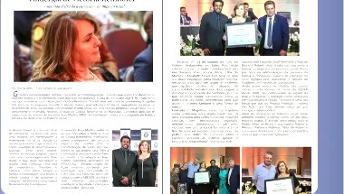
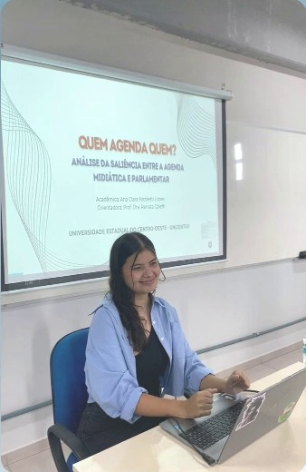
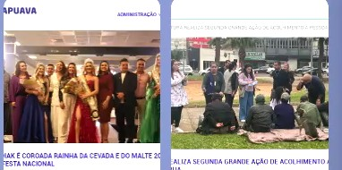
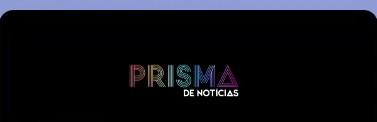
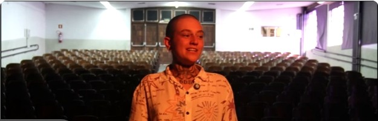

Revista Visual Guarapuava
Publicação impressa de Guarapuava. Produzi matérias de perfil, cobertura de eventos culturais e pautas de interesse local.
Jornalista & Social Mídia

Apresentação do trabalho de conclusão de curso — UNICENTRO
Sou jornalista formada pela UNICENTRO e trabalho na interseção entre o texto e o conteúdo que funciona nas plataformas digitais. Minha trajetória passou pela redação impressa, pela comunicação institucional e pela gestão de redes sociais, sempre com foco na clareza da informação.
Apuração, redação e publicação — em papel, em portal e em tela. Aqui estão alguns dos meus textos publicados.

Publicação impressa de Guarapuava. Produzi matérias de perfil, cobertura de eventos culturais e pautas de interesse local.

Mais de 190 conteúdos escritos e publicados no site oficial do município, cobrindo eventos, ações da gestão e pautas institucionais de interesse público. Cobertura fotográfica de grandes eventos da cidade.

Portal de notícias criado durante a graduação em Jornalismo na UNICENTRO. Espaço de produção jornalística real, com pauta, apuração, edição e publicação — desenvolvido como laboratório profissional.
"A Bandeira Sou Eu" é um projeto documental em três episódios, publicado no YouTube com circulação pública.

Curso — Masterclass Galápagos
Categoria vencedora com o curta "Imitose"
5ª Menção Honrosa — Projeto "Lente 1242"
Categoria vencedora com o telejornal "Conexão"